Как настроить запуск R-скрипта по расписанию?

С помощью скриптов R можно быстро и бесплатно собирать данные из API различных сервисов или рекламных площадок и записывать их в базу данных. Но если вы регулярно пользуетесь скриптами, то есть ли смысл каждый раз запускать их вручную?
Как оценить потерянный доход в Google AdWords с помощью языка R
Я расскажу, как настроить запуск скриптов R с определенным интервалом в операционной системе Windows.
1. Как добавить путь к R-консоли в переменную окружения PATH?
PATH — переменная окружения Unix-подобных операционных систем, DOS, OS/2 и Microsoft Windows, представляющая собой набор директорий, в которых расположены исполняемые файлы. В основном, каждый выполняемый процесс или сеанс пользователя имеет собственную переменную PATH.
Эта инструкция относится к операционным системам Windows 8 и 10, но вы без проблем можете найти подробные руководства и для любой другой версии Windows.
1.1. В строке «Поиск» найдите «Система (Панель управления)» и нажмите на ссылку «Дополнительные параметры системы».
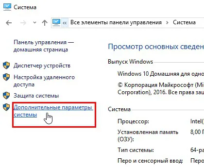
1.2. В окне свойств системы нажмите на кнопку «Переменные среды…».
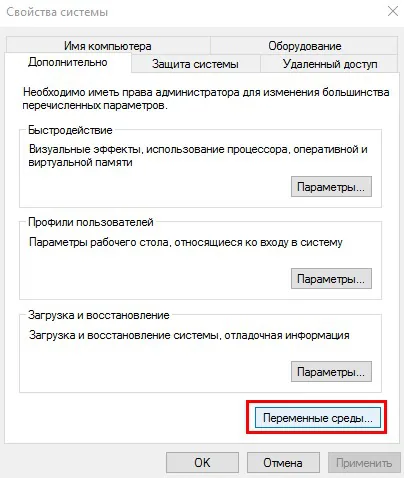
1.3. В разделе «Переменные среды» кликните на переменную PATH и нажмите «Изменить». Если переменной PATH не существует, нажмите «Создать».
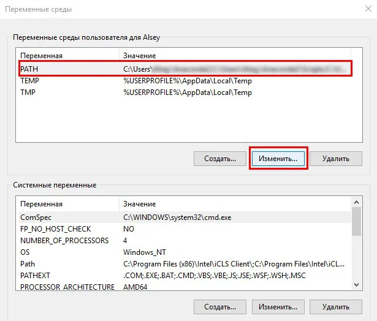
1.4. Добавьте в переменную путь к папке с файлом «R.exe».
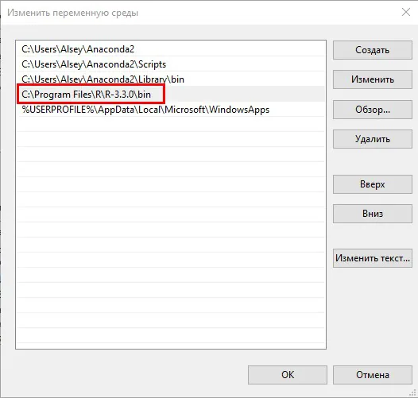
2. Создайте bat-файл
Bat-файл, по сути, похож на файл с расширением exe, но его код более простой и состоит из некоторых командных строк.
Создать bat-файл довольно просто. Можно записать команду запуска в обычный текстовый файл с расширением TXT, сохранить его и поменять расширение на «.bat». Я опишу другой способ — создание bat-файла с помощью бесплатного блокнота Notepad++.
2.1. Откройте Notepad++ (скачать его можете по ссылке).
2.2. Введите следующую команду:
@echo off
R CMD BATCH C:\R\myscript.R
Команда «@echo off» отключает вывод сообщений в командной строке при работе скрипта, вы можете изменить эту команду на «@echo on» и наблюдать за выполнением скрипта в ходе его работы.
Команда «R CMD BATCH» запускает выполнение R скрипта.
Во второй строке вместо «C:\R\myscript.R» пропишите путь к вашему файлу со скриптом R.
В результате файл будет выглядеть так:
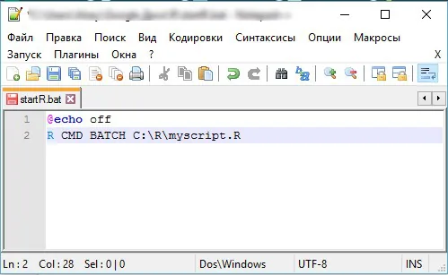
2.3. Сохраните созданный текстовый файл с расширением BAT. Для этого в меню Notepad++ выберите пункт «Файл» — «Сохранить как» — «Batch file (bat, cmd, nt)».
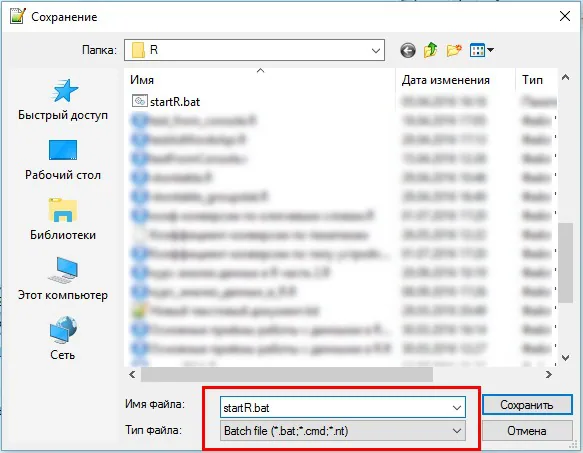
3. Настройте запуск R-скрипта в фоновом режиме
Если вы не хотите, чтобы при автозапуске R-скрипта на экране появлялось окно командной строки, то скомпилируйте ваш bat-файла в exe — в таком случае скрипт будет работать в фоновом режиме и не будет вам мешать.
3.1. Скачайте бесплатную утилиту «Bat To Exe Converter» по ссылке.
3.2. Укажите bat-файл, который необходимо скомпилировать, а также путь и название будущего exe-файла.
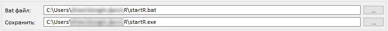
3.3. В области «Видимость приложения» установите переключатель в положение «Невидимое приложение».
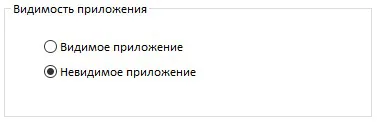
3.4. При желании установите иконку для вашего файла.
Чтобы установить иконку, перейдите на вкладку «Информация о версии» и с помощью кнопки «…» выберите нужную иконку в поле «Файл значка».
В качестве иконки можете использовать любое изображение в формате ICO или же нарисовать самостоятельно в бесплатном онлайн-редакторе.
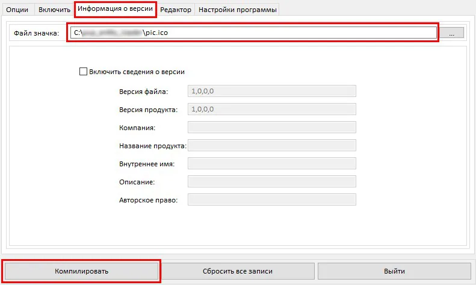
Нажмите кнопку «Компилировать».
4. Настройте планировщик задач Windows
Заключительный этап настройки — добавить задачу в планировщик задач Windows.
Планировщик задач Windows — встроенная утилита (аналог линуксового CRON), с помощью которой можно запланировать в определенное время с заданными условиями:
- запуск любой программы;
- отправку электронной почты;
- вывод на экран определенного сообщения.
4.1. Чтобы открыть планировщик задач, скопируйте в адресную строку открытой папки путь «%windir%\system32\taskschd.msc /s».
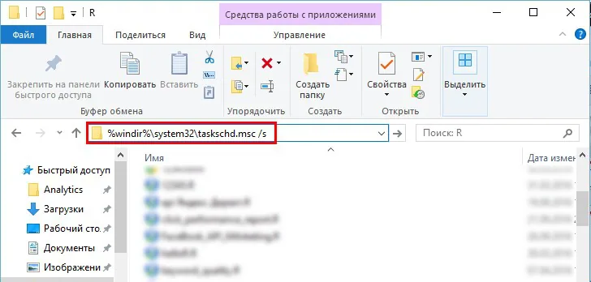
4.2. В правой части планировщика выберите пункт «Создать задачу…».
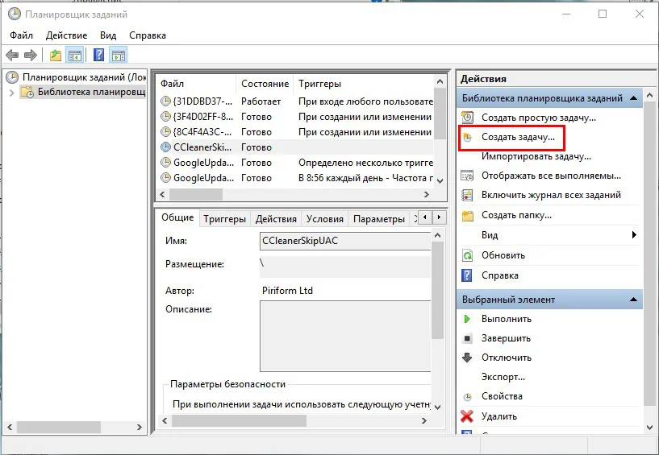
4.3. На вкладке «Общие» в диалоговом окне «Создание задачи» введите название и при необходимости краткое описание.
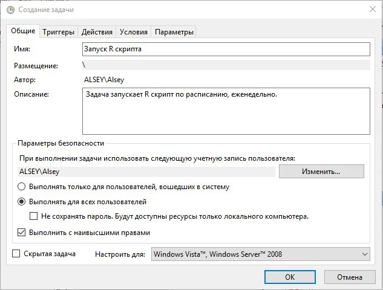
4.4. На вкладке «Триггеры» настройте расписание запуска скрипта: нажмите «Создать» и установите, к примеру, повтор запуска скрипта каждый понедельник в 12:45.
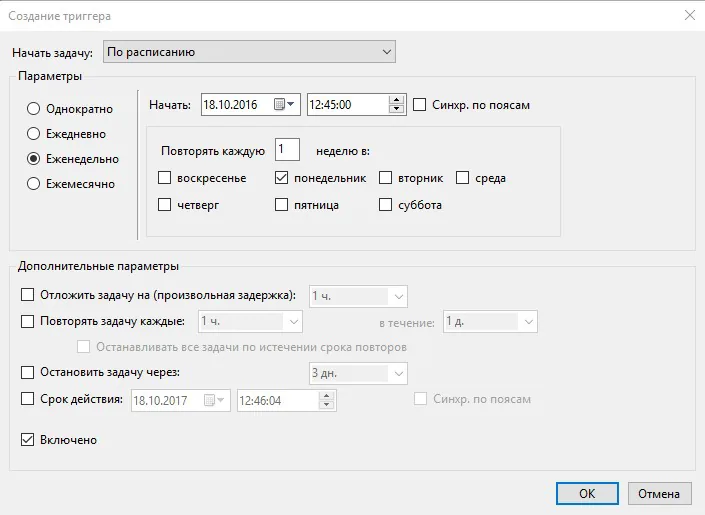
4.6. Далее перейдите на вкладку «Действие» и нажмите «Создать». В выпадающем списке «Действие» кликните на пункт «Запуск программы» и в области «Программа или сценарий» выберите bat-файл, созданный ранее.
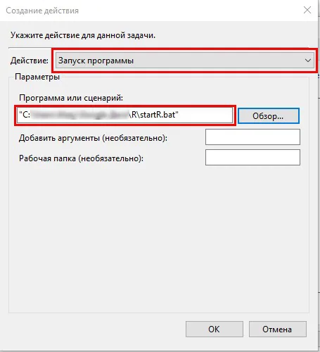
На этом процесс настройки запуска R скриптов по расписанию закончен. Если вы все сделали правильно, в списке появится новая задача.
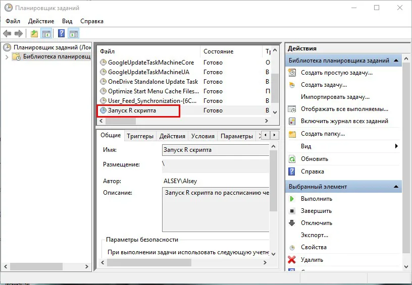
Вывод
С этим руководством настройка автозапуска займет не более десяти минут, и поможет сэкономить время в будущем.
Алгоритм действий:
- В переменной окружения PATH пропишите путь к консоли R.
- Создайте скрипт R, который будет выполнять нужные действия (например, сохранять результат в файл формата CSV или записывать в базу данных).
- Создайте bat-файл, в котором будет прописан путь к скрипту R.
- Скомпилируйте ваш bat-файла в exe, чтобы он запускался в фоновом режиме и не отвлекал от работы.
- В планировщике задач Windows добавьте повторяющееся задание на запуск bat-файла и установите определенный интервал времени.
Обрабатывать огромные массивы данных, агрегировать и передавать их в любые базы — просто и быстро, если вы правильно организовали свою работу.